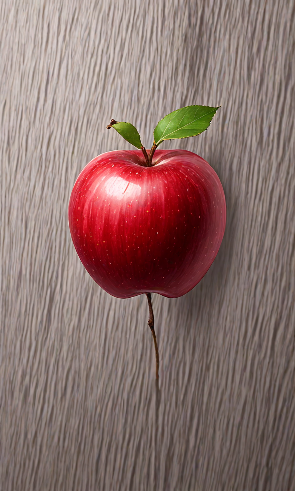
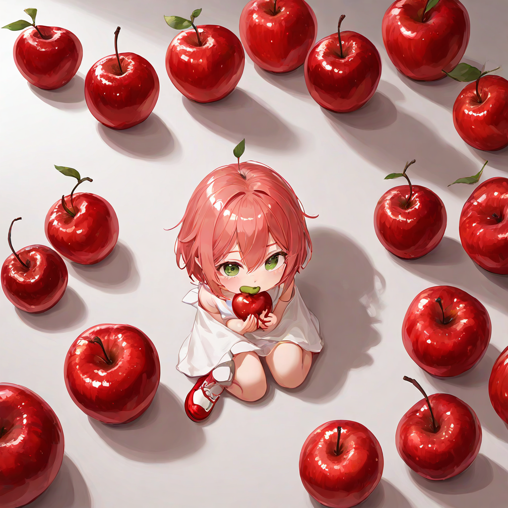

[AI画像生成ノウハウ7]人物を映さずに生成する方法
画像生成aiで人物以外を生成は難しいですよね
背景や物体だけを描きたくても、人物が生成されてしまい望んだ結果を得られません
そこで今回は、人物を描きたくない時に使えるプロンプトを見つけたので、皆さんに紹介したいと思います
人物を描きたくない時に使えるプロンプト
img of ooo
という形式のプロンプトを入れれば、人物が生成されづらいです
プロンプトの使用例
プロンプト「img of sea」の生成結果
プロンプト「sea」の生成結果
プロンプト「img of apple」の生成結果

さらにダメ押しで「no human」というプロンプトも追加すれば人物が生成されづらくなります
プロンプト「apple」の生成結果

単純な物質名のプロンプトだけだと人物が生成されてしまいますね
まとめ
いかがだったでしょうか？この記事を参考にして、AI画像生成でより思い通りの画像を生成できるようになれば嬉しいです
ではまた！